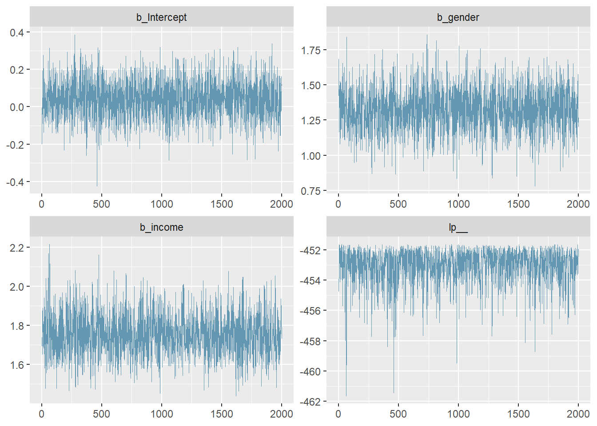
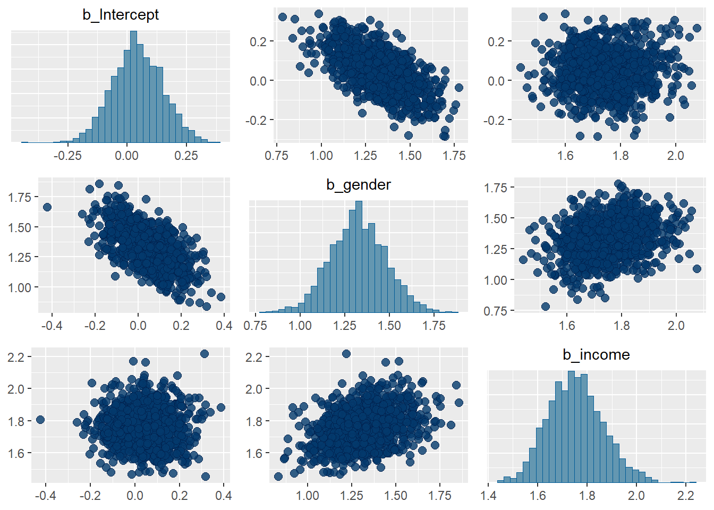
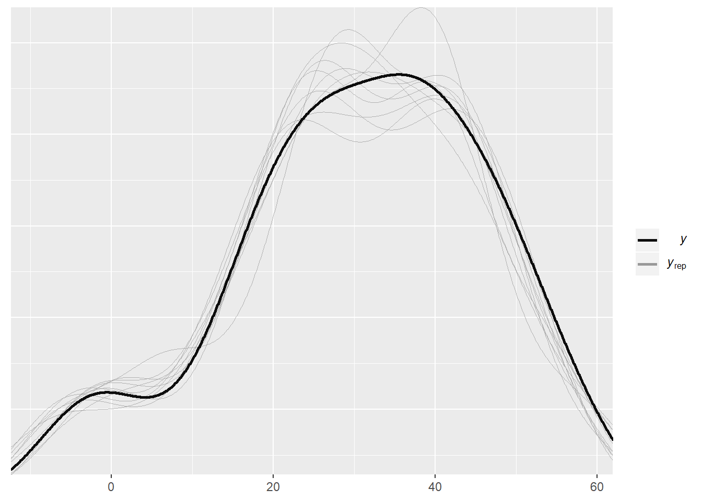

n <- 1000
gender <-rep(x = 0:1, length.out = n)
income <- rnorm(n, 0, 1)
mu <- gender * 1.5 + income * 2The we make it random!
y <- rbinom(n,1, prob = plogis(mu))
dat <- data.frame(gender =gender,
income = income,
y = y)Then we can create a model using brms
library(brms)## Loading required package: Rcpp## Registered S3 method overwritten by 'xts':
## method from
## as.zoo.xts zoo## Loading 'brms' package (version 2.9.0). Useful instructions
## can be found by typing help('brms'). A more detailed introduction
## to the package is available through vignette('brms_overview').(model <- bf(y ~ gender + income))## y ~ gender + incomeWe can treat model just like any other R object. Additionally, (and this is the handy part of doing it this way), we can see what priors are available with the get_prior function
get_prior(model, dat, bernoulli())We can then set our priors
my_priors <- c(
prior(normal(0, 0.5), class = "b", coef = "gender"),
prior(normal(0, 0.5), class = "b", coef = "income"))And fit our new model!
fit_binom <- brm(model, my_priors,
data = dat,
family = bernoulli(),
inits = 1000, cores = 2, # These are important!
chains = 2, seed = 1234, refresh = 0) # Setting a seet is important for reprocibility## Compiling the C++ model## Start samplingOther features adapt_delta and max_treedepth may need to be altered depending on convergence.
We check our trace plots
library(tidybayes)
library(bayesplot)## This is bayesplot version 1.7.0## - Online documentation and vignettes at mc-stan.org/bayesplot## - bayesplot theme set to bayesplot::theme_default()## * Does _not_ affect other ggplot2 plots## * See ?bayesplot_theme_set for details on theme settingmcmc_trace(as.matrix(fit_binom))
And the centering of our parameters
pairs(fit_binom)
And our course our values
summary(fit_binom)## Family: bernoulli
## Links: mu = logit
## Formula: y ~ gender + income
## Data: dat (Number of observations: 1000)
## Samples: 2 chains, each with iter = 2000; warmup = 1000; thin = 1;
## total post-warmup samples = 2000
##
## Population-Level Effects:
## Estimate Est.Error l-95% CI u-95% CI Eff.Sample Rhat
## Intercept 0.04 0.10 -0.15 0.25 2116 1.00
## gender 1.32 0.16 1.02 1.64 1579 1.00
## income 1.75 0.11 1.55 1.99 1352 1.00
##
## Samples were drawn using sampling(NUTS). For each parameter, Eff.Sample
## is a crude measure of effective sample size, and Rhat is the potential
## scale reduction factor on split chains (at convergence, Rhat = 1).brmsLet’s make a simple time series data set
n <- 100
x1 <- rnorm(n)
x2 <- rnorm(n)
y <- vector(length = n)
y[1] <- 5*x1[1] + 2*x2[1]
for(i in 2:n){
y[i] <-5*x1[i] + y[i-1] - 2*x2[i]
}
ts_dat <- data.frame(x1, x2, y)Now we have to specify an additional term.
library(brms)
fit_ar1 <- brm(y ~ x1 + x2,
data = ts_dat,
autocor = cor_ar(p = 1), # Tell me more?
inits = 1000, cores = 2, # These are important!
chains = 2, seed = 1234, refresh = 0) # Setting a seet is important for reprocibility## Compiling the C++ model## Start samplingA PPC
library(bayesplot)
color_scheme_set("darkgray")
pp_check(fit_ar1)## Using 10 posterior samples for ppc type 'dens_overlay' by default.
summary(fit_ar1)## Family: gaussian
## Links: mu = identity; sigma = identity
## Formula: y ~ x1 + x2
## Data: ts_dat (Number of observations: 100)
## Samples: 2 chains, each with iter = 2000; warmup = 1000; thin = 1;
## total post-warmup samples = 2000
##
## Correlation Structures:
## Estimate Est.Error l-95% CI u-95% CI Eff.Sample Rhat
## ar[1] 0.99 0.00 0.98 1.00 2028 1.00
##
## Population-Level Effects:
## Estimate Est.Error l-95% CI u-95% CI Eff.Sample Rhat
## Intercept 1.70 3.31 -4.86 8.39 1829 1.00
## x1 2.44 0.24 1.97 2.92 1545 1.00
## x2 -1.18 0.28 -1.74 -0.63 1937 1.00
##
## Family Specific Parameters:
## Estimate Est.Error l-95% CI u-95% CI Eff.Sample Rhat
## sigma 3.36 0.26 2.92 3.90 1854 1.00
##
## Samples were drawn using sampling(NUTS). For each parameter, Eff.Sample
## is a crude measure of effective sample size, and Rhat is the potential
## scale reduction factor on split chains (at convergence, Rhat = 1).Suppose we have some people in the experiment and we give them some kind of treatment. Then we measure the impact over time. See here for more details.
J <- 50 # number of people in the experiment
N_per_person <- 10 # number of measurements per person
person_id <- rep(1:J, rep(N_per_person, J))
index <- rep(1:N_per_person, J)
time <- index - 1 # time of measurements, from 0 to 9
N <- length(person_id)
a <- rnorm(J, 0, 1)
b <- rnorm(J, 1, 1)
theta <- 1
sigma_y <- 1
z <- sample(rep(c(0,1), J/2), J)
y_pred <- a[person_id] + b[person_id]*time + theta*z[person_id]*time
y <- rnorm(N, y_pred, sigma_y)
z_full <- z[person_id]
exposure <- z_full*time
data_1 <- data.frame(time, person_id, exposure, y)And then we can fit the data
fit_1 <- brm(y ~ (1 + time | person_id) + time + exposure, data=data_1)## Compiling the C++ model## Start sampling##
## SAMPLING FOR MODEL '54e5f1c0597543b321facd183e399c95' NOW (CHAIN 1).
## Chain 1:
## Chain 1: Gradient evaluation took 0 seconds
## Chain 1: 1000 transitions using 10 leapfrog steps per transition would take 0 seconds.
## Chain 1: Adjust your expectations accordingly!
## Chain 1:
## Chain 1:
## Chain 1: Iteration: 1 / 2000 [ 0%] (Warmup)
## Chain 1: Iteration: 200 / 2000 [ 10%] (Warmup)
## Chain 1: Iteration: 400 / 2000 [ 20%] (Warmup)
## Chain 1: Iteration: 600 / 2000 [ 30%] (Warmup)
## Chain 1: Iteration: 800 / 2000 [ 40%] (Warmup)
## Chain 1: Iteration: 1000 / 2000 [ 50%] (Warmup)
## Chain 1: Iteration: 1001 / 2000 [ 50%] (Sampling)
## Chain 1: Iteration: 1200 / 2000 [ 60%] (Sampling)
## Chain 1: Iteration: 1400 / 2000 [ 70%] (Sampling)
## Chain 1: Iteration: 1600 / 2000 [ 80%] (Sampling)
## Chain 1: Iteration: 1800 / 2000 [ 90%] (Sampling)
## Chain 1: Iteration: 2000 / 2000 [100%] (Sampling)
## Chain 1:
## Chain 1: Elapsed Time: 6.926 seconds (Warm-up)
## Chain 1: 6.003 seconds (Sampling)
## Chain 1: 12.929 seconds (Total)
## Chain 1:
##
## SAMPLING FOR MODEL '54e5f1c0597543b321facd183e399c95' NOW (CHAIN 2).
## Chain 2:
## Chain 2: Gradient evaluation took 0 seconds
## Chain 2: 1000 transitions using 10 leapfrog steps per transition would take 0 seconds.
## Chain 2: Adjust your expectations accordingly!
## Chain 2:
## Chain 2:
## Chain 2: Iteration: 1 / 2000 [ 0%] (Warmup)
## Chain 2: Iteration: 200 / 2000 [ 10%] (Warmup)
## Chain 2: Iteration: 400 / 2000 [ 20%] (Warmup)
## Chain 2: Iteration: 600 / 2000 [ 30%] (Warmup)
## Chain 2: Iteration: 800 / 2000 [ 40%] (Warmup)
## Chain 2: Iteration: 1000 / 2000 [ 50%] (Warmup)
## Chain 2: Iteration: 1001 / 2000 [ 50%] (Sampling)
## Chain 2: Iteration: 1200 / 2000 [ 60%] (Sampling)
## Chain 2: Iteration: 1400 / 2000 [ 70%] (Sampling)
## Chain 2: Iteration: 1600 / 2000 [ 80%] (Sampling)
## Chain 2: Iteration: 1800 / 2000 [ 90%] (Sampling)
## Chain 2: Iteration: 2000 / 2000 [100%] (Sampling)
## Chain 2:
## Chain 2: Elapsed Time: 6.969 seconds (Warm-up)
## Chain 2: 6.339 seconds (Sampling)
## Chain 2: 13.308 seconds (Total)
## Chain 2:
##
## SAMPLING FOR MODEL '54e5f1c0597543b321facd183e399c95' NOW (CHAIN 3).
## Chain 3:
## Chain 3: Gradient evaluation took 0 seconds
## Chain 3: 1000 transitions using 10 leapfrog steps per transition would take 0 seconds.
## Chain 3: Adjust your expectations accordingly!
## Chain 3:
## Chain 3:
## Chain 3: Iteration: 1 / 2000 [ 0%] (Warmup)
## Chain 3: Iteration: 200 / 2000 [ 10%] (Warmup)
## Chain 3: Iteration: 400 / 2000 [ 20%] (Warmup)
## Chain 3: Iteration: 600 / 2000 [ 30%] (Warmup)
## Chain 3: Iteration: 800 / 2000 [ 40%] (Warmup)
## Chain 3: Iteration: 1000 / 2000 [ 50%] (Warmup)
## Chain 3: Iteration: 1001 / 2000 [ 50%] (Sampling)
## Chain 3: Iteration: 1200 / 2000 [ 60%] (Sampling)
## Chain 3: Iteration: 1400 / 2000 [ 70%] (Sampling)
## Chain 3: Iteration: 1600 / 2000 [ 80%] (Sampling)
## Chain 3: Iteration: 1800 / 2000 [ 90%] (Sampling)
## Chain 3: Iteration: 2000 / 2000 [100%] (Sampling)
## Chain 3:
## Chain 3: Elapsed Time: 6.639 seconds (Warm-up)
## Chain 3: 6.191 seconds (Sampling)
## Chain 3: 12.83 seconds (Total)
## Chain 3:
##
## SAMPLING FOR MODEL '54e5f1c0597543b321facd183e399c95' NOW (CHAIN 4).
## Chain 4:
## Chain 4: Gradient evaluation took 0 seconds
## Chain 4: 1000 transitions using 10 leapfrog steps per transition would take 0 seconds.
## Chain 4: Adjust your expectations accordingly!
## Chain 4:
## Chain 4:
## Chain 4: Iteration: 1 / 2000 [ 0%] (Warmup)
## Chain 4: Iteration: 200 / 2000 [ 10%] (Warmup)
## Chain 4: Iteration: 400 / 2000 [ 20%] (Warmup)
## Chain 4: Iteration: 600 / 2000 [ 30%] (Warmup)
## Chain 4: Iteration: 800 / 2000 [ 40%] (Warmup)
## Chain 4: Iteration: 1000 / 2000 [ 50%] (Warmup)
## Chain 4: Iteration: 1001 / 2000 [ 50%] (Sampling)
## Chain 4: Iteration: 1200 / 2000 [ 60%] (Sampling)
## Chain 4: Iteration: 1400 / 2000 [ 70%] (Sampling)
## Chain 4: Iteration: 1600 / 2000 [ 80%] (Sampling)
## Chain 4: Iteration: 1800 / 2000 [ 90%] (Sampling)
## Chain 4: Iteration: 2000 / 2000 [100%] (Sampling)
## Chain 4:
## Chain 4: Elapsed Time: 6.734 seconds (Warm-up)
## Chain 4: 6.121 seconds (Sampling)
## Chain 4: 12.855 seconds (Total)
## Chain 4:And see if we can recover our effect.
summary(fit_1)## Family: gaussian
## Links: mu = identity; sigma = identity
## Formula: y ~ (1 + time | person_id) + time + exposure
## Data: data_1 (Number of observations: 500)
## Samples: 4 chains, each with iter = 2000; warmup = 1000; thin = 1;
## total post-warmup samples = 4000
##
## Group-Level Effects:
## ~person_id (Number of levels: 50)
## Estimate Est.Error l-95% CI u-95% CI Eff.Sample Rhat
## sd(Intercept) 1.20 0.16 0.92 1.55 1211 1.00
## sd(time) 1.09 0.12 0.89 1.36 962 1.00
## cor(Intercept,time) 0.07 0.16 -0.25 0.38 487 1.01
##
## Population-Level Effects:
## Estimate Est.Error l-95% CI u-95% CI Eff.Sample Rhat
## Intercept -0.00 0.19 -0.38 0.37 1936 1.00
## time 1.10 0.22 0.66 1.53 547 1.01
## exposure 0.88 0.31 0.27 1.47 486 1.00
##
## Family Specific Parameters:
## Estimate Est.Error l-95% CI u-95% CI Eff.Sample Rhat
## sigma 0.99 0.03 0.93 1.06 4623 1.00
##
## Samples were drawn using sampling(NUTS). For each parameter, Eff.Sample
## is a crude measure of effective sample size, and Rhat is the potential
## scale reduction factor on split chains (at convergence, Rhat = 1).
Advanced Analysis in R
me.dewitt.jr@gmail.com
Office of Institutional Research
309 Reynolda Hall
Winston- Salem, NC, 27106
Copyright © 2018 Michael DeWitt. All rights reserved.